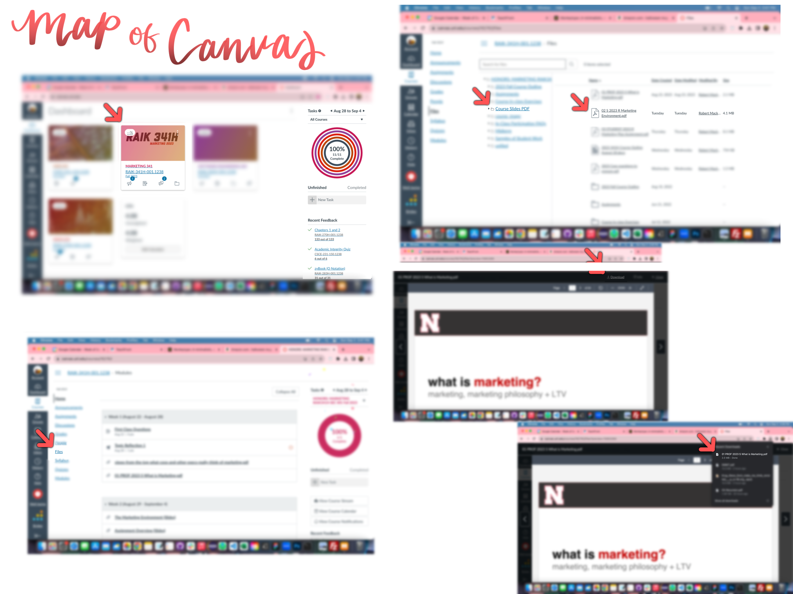

My Projects
UI/UX Design and Software Development
Chapters 1-5
This was the first time I had ever been so painfully aware of how much happy talk is on a website. I made a map of a site I use every single day (Canvas), and the path that I follow to get to my desired task. Since the most frequent task I do on Canvas is downloading PDFs, I blurred out all of the irrelevant information in relation to my task. It highlights the importance of conciseness and simplicity in a design, trying to eliminate as much unnecessary content as possible.
